Vehicle Expenses Automated — full illustrated user manual (HTML for browsers). Edit source: docs/i18n/id/user-manual.md; regenerate with ./scripts/render-user-manual.sh.
Edit sumber (Penurunan harga). Browser dan pembaca dalam aplikasi membuka HTML yang dirender:
- Web:docs/user-manual.html(dibuat ulang dengan./scripts/render-user-manual.sh)
- Aplikasi: Bantuan / Tentang → manual lengkap (paket tangkapan layar HTML +)Jangan arahkan pengguna akhir ke URL
.mdmentah — browser hanya menampilkan teks biasa.
Pelacakan yang mengutamakan kamera untuk pengisian bahan bakar dan pengeluaran kendaraan, dengan sinkronisasi multi-perangkat opsional dan pencadangan di akun cloud Anda.
Ini adalah panduan lengkap (tangkapan layar + setiap langkah). Di telepon, Menu → Bantuan adalah panduan singkat untuk memulai.
Tidak dibahas di sini: Impor Gambar Lama, Eksperimen Penyelarasan, dan Eksperimen Pompa (pengembang/alat canggih).
Ini muncul di layar utama. Mengetahui mereka menghemat banyak perburuan.
| Dimana | Ikon / kontrol | Apa fungsinya |
|---|---|---|
| Bilah atas | ☰ Menu (hamburger) | Membuka panel samping navigasi |
| Bilah atas | ⓘ (bantuan halaman) | Bantuan singkat untuk halaman saat ini (di sebelah menu bila tersedia) |
| Bilah atas | ?N (kuning) |
Pertanyaan tinjauan impor yang tertunda — membuka Tinjauan impor |
| Bilah atas | ! (merah) | Tujuan spreadsheet atau foto baru-baru ini gagal — buka Sinkronisasi untuk memperbaiki |
| Bilah atas | ☰ + ← | Laporkan anak-anak dan daftar Pengeluaran menunjukkan menu dan kembali secara bersamaan; Hub laporan hanya ada di menu |
| Setting / edit bahan bakar | ← | Kembali (pengaturan spreadsheet/foto dan edit bahan bakar tetap fokus ke belakang) |
| Isi Cepat | Lingkaran putih (rana) | Tangkap odometer atau tampilan pompa untuk OCR |
| Isi Cepat | Disk / Simpan | Hemat pengisian (membutuhkan kendaraan dan minimal satu odo/volume/biaya) |
| Isi Cepat | ↕ panah (pengalih mode) | Alihkan mode odometer vs mode pompa (biaya/volume). Batas hijau menyorot grup bidang aktif |
| Isi Cepat | ↔ panah (antara biaya & volume) | Tukar biaya dan volume jika OCR memasukkannya ke kolom yang salah |
| Isi Cepat | Perbesar 1x / … | Rasio zoom kamera bila lensa mendukungnya |
| Isi Cepat (setelah pengambilan) | Segarkan pada tombol utama | Buang pratinjau dan kembali ke kamera langsung |
| Isi Cepat (saat memproses) | X pada tombol utama | Batalkan pengambilan yang sedang berlangsung/OCR |
| Biaya | Simpan | Hemat biaya |
| Biaya | Lingkaran rana | Ambil foto tanda terima |
| Biaya | Galeri | Pilih gambar tanda terima dari perpustakaan |
| Biaya | Mengambil kembali | Hapus foto tanda terima saat ini dan potret lagi |
| Pengeluaran / Kelola Kendaraan | + / − FAB | Perbesar pratinjau foto |
| Dialog landmark | Edit OCR | Perbaiki atau tambahkan teks landmark yang terlewatkan oleh mesin |
| Formulir Spreadsheet / Foto | 🔍 Telusuri | Jelajahi Google Drive untuk mencari sheet atau folder (setelah masuk) |
Simbol mata uang pada kolom biaya dan G/L pada kolom volume dapat diketuk: buka menu kecil untuk mengubah mata uang atau galon vs liter untuk entri tersebut.
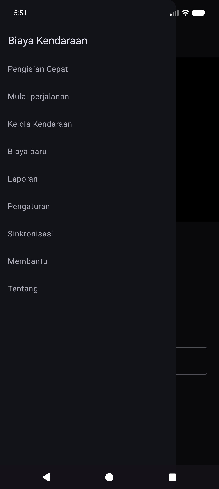
Laci utama: Pengisian Cepat · Mulai perjalanan · Kelola Kendaraan · Pengeluaran baru · Laporan · Pengaturan · Sinkronisasi · Bantuan · Tentang.
Laci eksperimen (Pengaturan → Tampilkan layar eksperimen): Eksperimen Penyelarasan · Eksperimen Pompa · Impor Gambar Lama.
Melalui hub Laporan (bukan laci utama): Daftar pengeluaran · Isi riwayat.
OCR dan pencocokan kendaraan otomatis berfungsi paling baik setelah Anda mendaftarkan setiap kendaraan dengan foto dasbor referensi, memotong odometer, dan menjalankan Discovery sehingga aplikasi menyimpan teks penting untuk dasbor tersebut. (Bagaimana landmark dipilih dan dicocokkan akan didokumentasikan secara lebih rinci dalam pembaruan selanjutnya.)
Menu → Kelola Kendaraan. Pilih kendaraan (atau Tambahkan Kendaraan Baru).
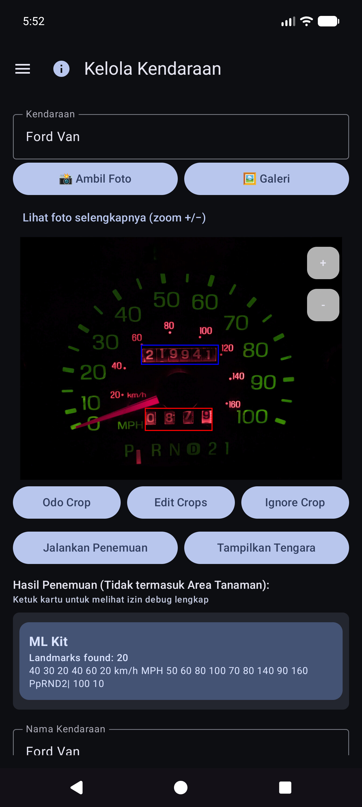
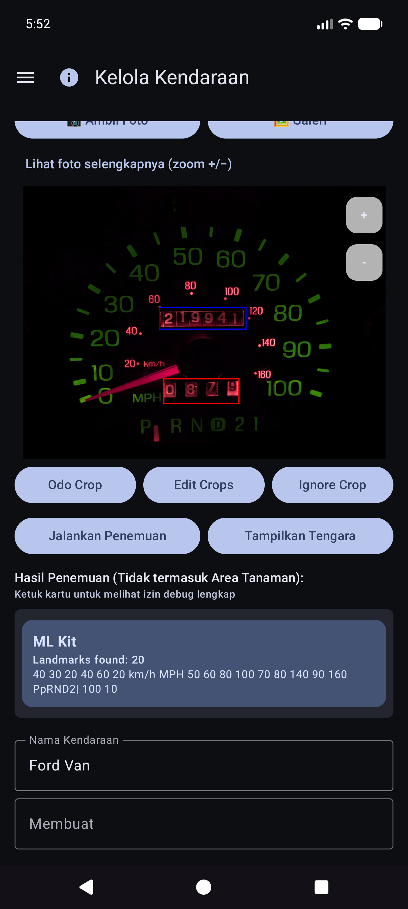
Setelah Tampilkan Tengara, gulir daftar dan perbaiki nilainya. Mesin terkadang melewatkan angka kecil (misalnya jam 60 di kanan bawah cluster). Gunakan Edit OCR untuk menambah atau memperbaikinya sehingga identitas kendaraan tetap dapat diandalkan.
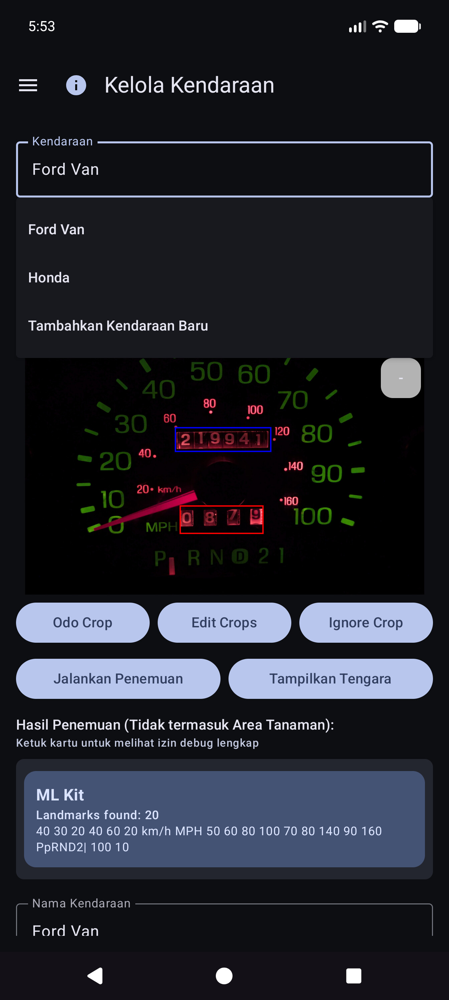
Anda masih dapat menggunakan aplikasi dengan memilih kendaraan dan mengetik odometer, volume, dan biaya pada Isi Cepat — OCR bersifat opsional untuk setiap bidang. Impor galeri berfungsi untuk foto dasbor referensi saat Anda memilih untuk tidak memotret dalam aplikasi.
Tips: Setelah sinkronisasi spreadsheet, definisi kendaraan (potongan, landmark) ada di database lokal — Anda tidak perlu membuka kembali Kelola Kendaraan untuk Isi Cepat untuk menggunakannya.
Aplikasi ini dibuat agar beberapa ponsel atau tablet dapat berbagi data armada yang sama, sehingga Anda dapat menyimpan salinan data dan foto Anda di luar perangkat. Hal ini dilakukan dengan tujuan yang Anda konfigurasikan di bawah akun Anda atau server Anda yang dihosting sendiri — bukan “cloud Pengeluaran Kendaraan” milik perusahaan yang dapat dilihat orang lain.
| Jenis | Apa yang disimpannya | Penggunaan khas |
|---|---|---|
| Sinkronisasi spreadsheet/tabel | Kendaraan, pengisian bahan bakar, pengeluaran (baris dan tab) | Penggabungan multi-perangkat + pencadangan terstruktur |
| Cadangan foto | Gambar biner (dasbor/pompa/kwitansi/foto referensi) | Cadangan foto + pulihkan file yang hilang |
Anda dapat mengonfigurasi beberapa tujuan dari setiap jenis (soft cap per jenis). Pekerja manual Sinkronkan sekarang dan latar belakang menjalankan pekerja yang diaktifkan.
Proses masuk dan token tetap ada di perangkat untuk penyedia yang Anda pilih (Google, Microsoft, kunci S3, URL yang dihosting sendiri, dan sebagainya). Tujuan berada di bawah kontrol penuh pengguna — akun Google Anda, OneDrive Anda, bucket MinIO Anda, host EtherCalc Anda, dll. Tidak ada yang dibagikan dengan pengguna Pengeluaran Kendaraan lainnya melalui backend bersama.
Dikonfigurasi dalam Menu → Sinkronisasi → Sinkronisasi spreadsheet (juga dapat dijangkau dari baris ringkasan Pengaturan). Opsi pemilih kelas satu:
| Sasaran | Catatan |
|---|---|
| Google Spreadsheet | Standar umum; tab untuk Kendaraan, Pengeluaran, dan bahan bakar per kendaraan |
| Unggul | Buku kerja Microsoft melalui pengikatan gaya Grafik / OneDrive |
| EtherCalc | Ruang spreadsheet kolaboratif yang dihosting sendiri |
| Lainnya → mengimplementasikan backend | Baserow, NocoDB, Airtable, PocketBase, Supabase, Firebase, Zoho Sheet |
Ditangguhkan/belum tanpa kepala (tercantum di bawah Lainnya tetapi belum diterapkan sepenuhnya): OnlyOffice, Collabora. Lihat juga indeks self-host.
CSV ekspor/impor (ZIP dengan tata letak tab yang sama) tersedia dari Pengaturan sebagai cadangan portabel, terlepas dari sinkronisasi langsung.
Dikonfigurasi pada Menu → Sinkronisasi → Pencadangan foto (juga dari baris ringkasan Pengaturan):
| Sasaran | Catatan |
|---|---|
| Google Drive | Folder yang Anda pilih (jelajahi atau tempel URL) |
| OneDrive | Akun Microsoft + awalan jalur |
| S3 | AWS, Wasabi, Cloudflare R2, MinIO, dan titik akhir lain yang kompatibel dengan S3 |
| Lainnya | penyimpanan yang didukung rclone (misalnya WebDAV, SFTP, dan remote pilihan lainnya yang tersedia di pemilih dalam aplikasi) |
Siapkan lembar contekan untuk foto yang dihosting sendiri dan target tabel: indeks host mandiri.
Kendaraan, Beban, Bahan Bakar - {nama kendaraan}.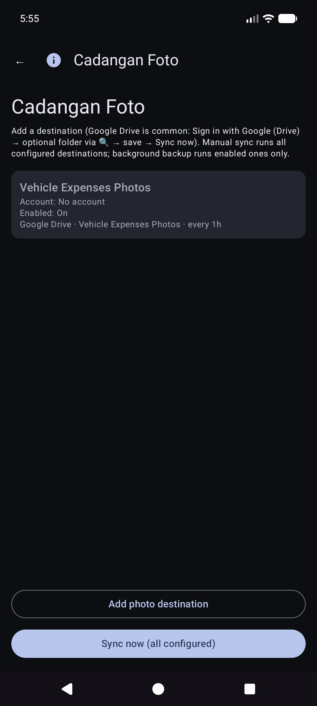

Manual Sinkronisasi sekarang untuk foto sudah bisa dilakukan; pencadangan latar belakang biasanya memproses unggahan hanya tertunda sesuai jadwal.
Ini adalah layar utama saat Anda membuka aplikasi.
Anda tidak perlu memilih kendaraan terlebih dahulu. Saat kendaraan telah menyiapkan tengara di Kelola Kendaraan, Isi Cepat secara otomatis mendeteksi kendaraan mana dari gambar dasbor setelah Anda mengambil odometer. Anda masih dapat membuka dropdown Kendaraan untuk menggantinya jika diperlukan.
Tetap dalam mode odometer dan bingkai cluster. Petunjuk: Arahkan ke odometer. Ketuk rana untuk mengambil gambar.
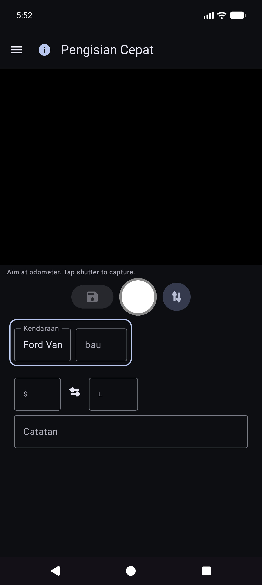
OCR mengisi Odo dan mencoba mencocokkan kendaraan dari landmark (tinjau keduanya jika diperlukan). Tombol utama menjadi Coba lagi untuk memotret ulang. Instruksi merangkum bacaan.


Anda tetap berada di Isi Cepat untuk perhentian berikutnya (kolom kosong setelah disimpan). Bekerja sepenuhnya offline; sinkronisasi berjalan nanti di latar belakang saat dikonfigurasi.
Tip di layar (di bawah baris instruksi): Bidik = ambil · Disk = simpan · ↕ = mode odo/pompa · ↔ = biaya/volume swap.
Menu → Pengeluaran baru.
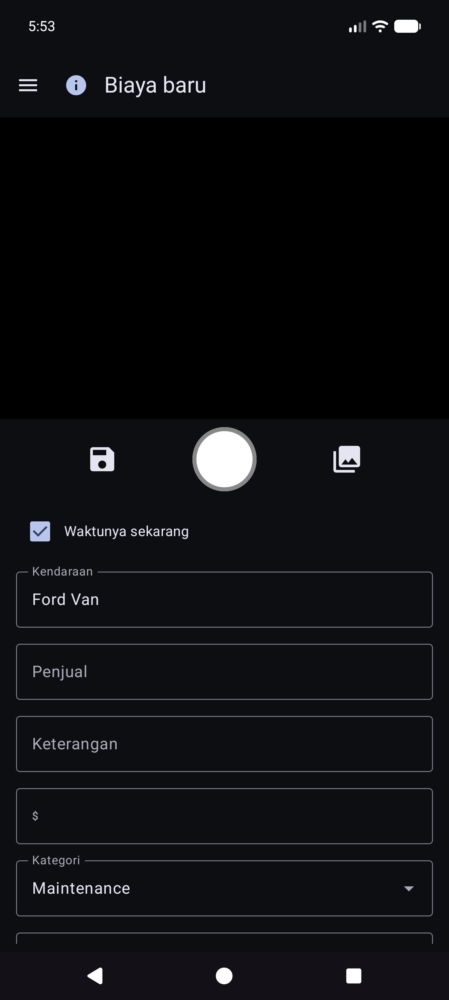
Menu → Laporan → Daftar pengeluaran — menelusuri pengeluaran non-bahan bakar sebelumnya; membuka item untuk diedit.
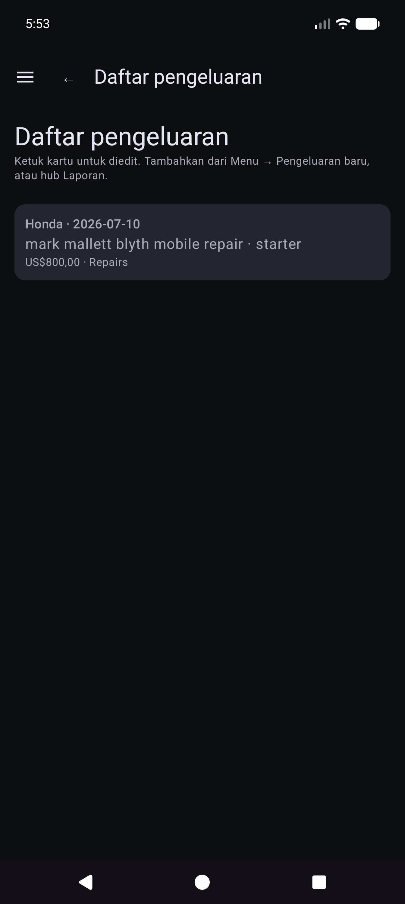
Buka satu baris dari daftar. Vendor, jumlah, kategori, kendaraan, dan deskripsi yang benar. Jika tanda terima hanya ada dalam cadangan foto (tidak ada file lokal yang dapat dibaca), gunakan Ambil gambar dari arsip saat ditampilkan (berfungsi di seluruh tujuan foto yang dikonfigurasi).

Menu → Mulai perjalanan (setelah Isi Cepat di laci). Ambil atau masukkan odometer, pilih jenis perjalanan, simpan dengan ikon disk. Berhenti adalah pintasan untuk Pribadi yang sekarang berada di lokasi GPS yang disimpan. Gunakan ⓘ untuk pengingat kontrol.
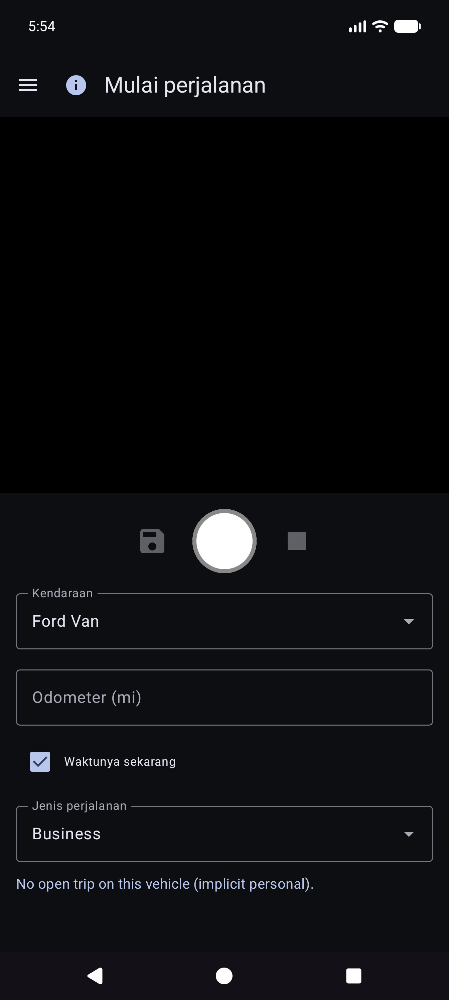
Awal perjalanan disimpan sebagai baris bahan bakar dengan Jenis Perjalanan (bukan pengisian normal). Mereka muncul di Laporan → Jarak perjalanan, bukan di Riwayat Bahan Bakar.
Menu → Laporan membuka hub produk (ringkasan sepanjang masa + kartu katalog). Ini adalah satu-satunya laporan produk yang muncul — tidak ada item laci “Laporan & Bagan” yang terpisah.
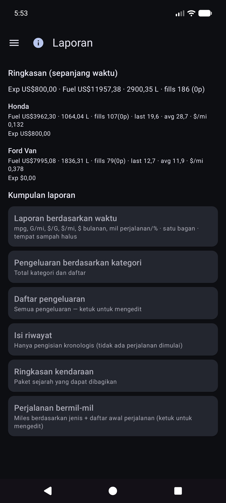
Buka kartu untuk mode kendaraan (Semua / Masing-masing / Tunggal), filter periode, bagan, dan bagikan (TEKS / CSV / PDF). Bilah atas pada anak laporan: ☰ + ← (dan ⓘ saat terdaftar).
Kartu grafik utama. Metrik opsional (mpg, volume/jarak seperti G/mi, harga satuan seperti $/G, biaya/jarak, $ bulanan, mil perjalanan, % perjalanan menurut jenis) dengan wadah Halus dan skala Y independen (sisi kiri ekonomi; uang dan keluarga perjalanan di sebelah kanan).
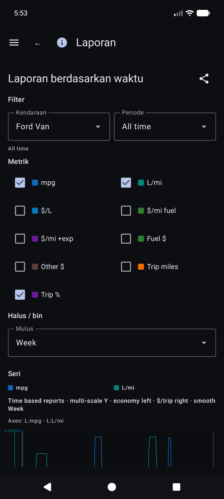
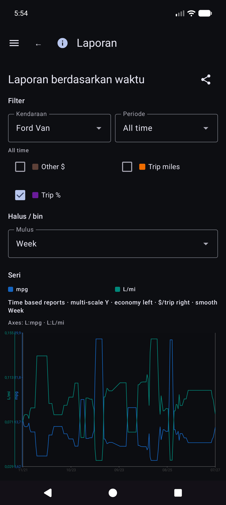
Detail matematika ekonomi: REPORTS_METRICS.md.
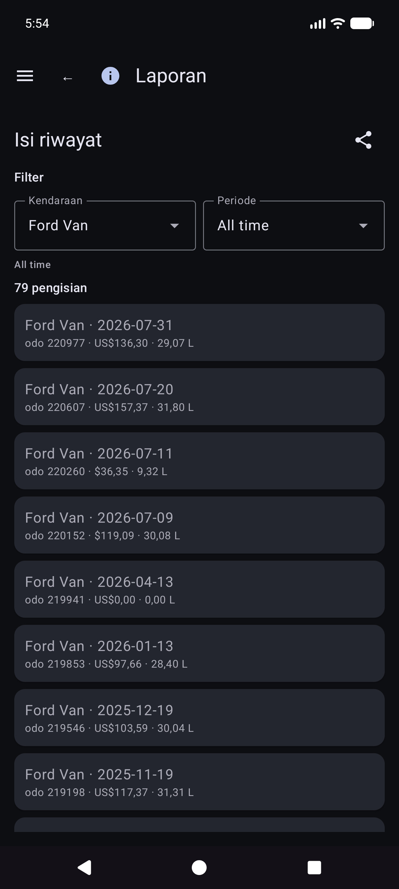
Laporan → Jarak tempuh perjalanan — jarak tempuh berdasarkan jenis, bagan, dan kronologis daftar awal perjalanan / segmen. Ketuk awal yang sebenarnya untuk membuka Edit isi untuk baris tersebut.
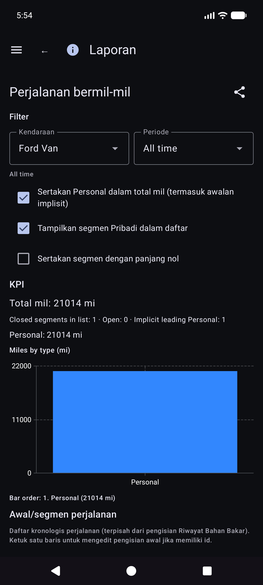
Dari Riwayat pengisian, Riwayat Bahan Bakar, atau Jarak perjalanan, buka pengisian. Tata letak: kendaraan dan odometer, mata uang sebelum biaya, volume, catatan. Jenis perjalanan hanya muncul bila baris tersebut merupakan awal perjalanan. Lokasi memiliki ringkasan ditambah Detail lokasi. Foto lokal dengan identitas cloud tidak ada: Ambil gambar dari arsip.
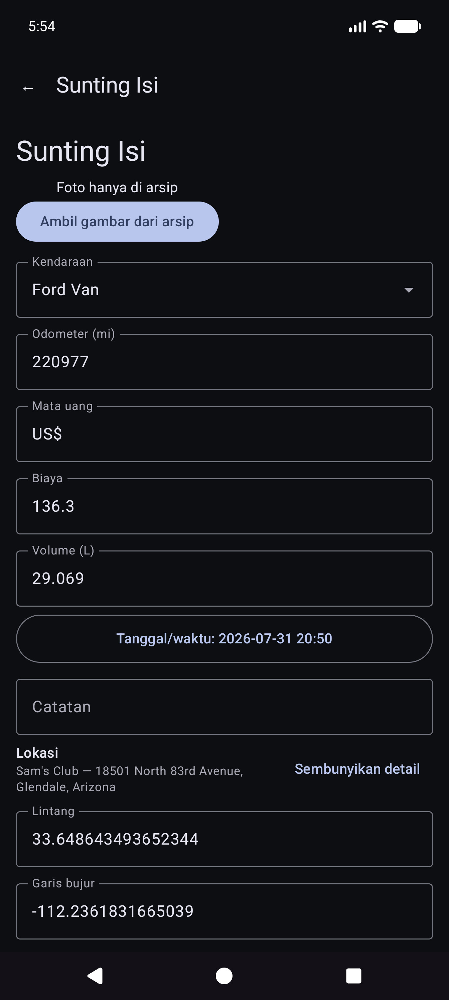
Kartu katalog lainnya mencakup pengeluaran berdasarkan kategori, ringkasan kendaraan, dan daftar pengeluaran.
Uang menggunakan mata uang setiap baris saat disetel. Total mata uang campuran menunjukkan subtotal per mata uang (tidak ada konversi FX senyap).
Menu → Sinkronisasi adalah hub untuk tujuan spreadsheet dan foto (tidak hanya terkubur di bawah Pengaturan).
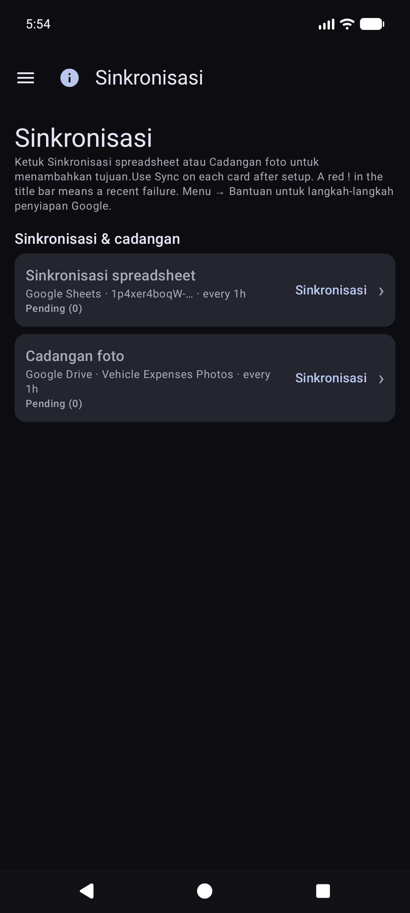
Menu → Pengaturan.
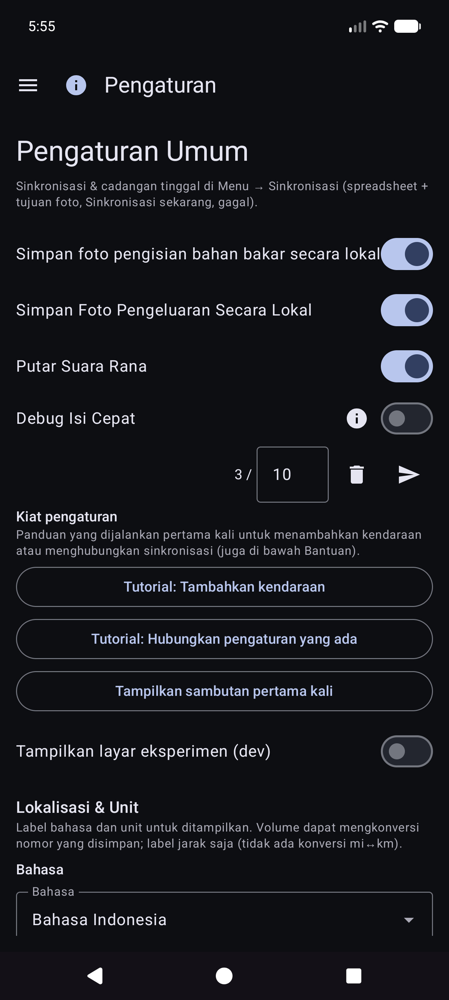
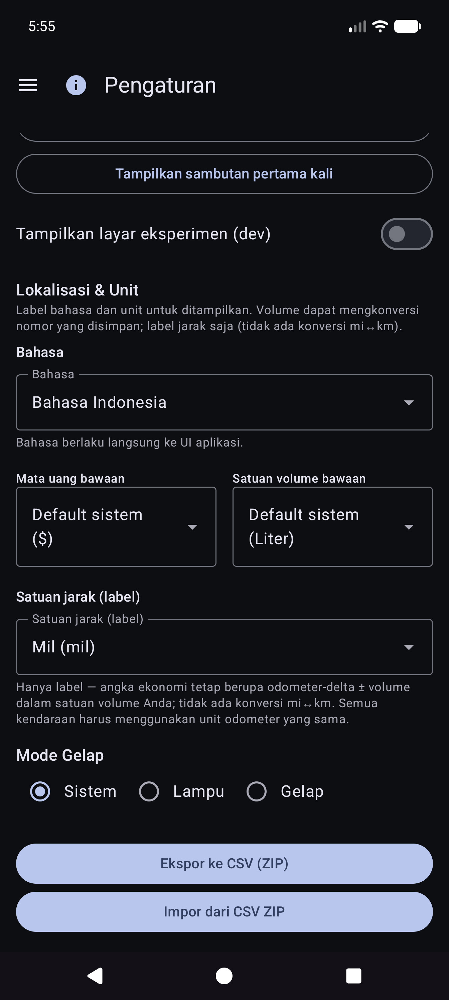
Untuk tujuan, pilih Menu → Sinkronisasi. Pengaturan mungkin masih menampilkan baris ringkasan yang membuka daftar yang sama.
CSV ekspor/impor (ZIP Kendaraan / Pengeluaran / Tab Bahan Bakar) tersedia dari Pengaturan ketika ditawarkan oleh versi saat ini.
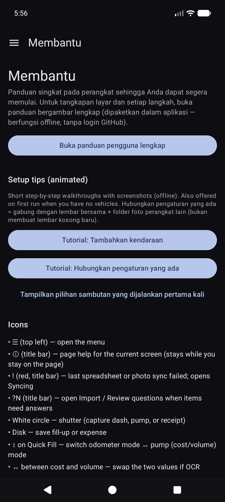
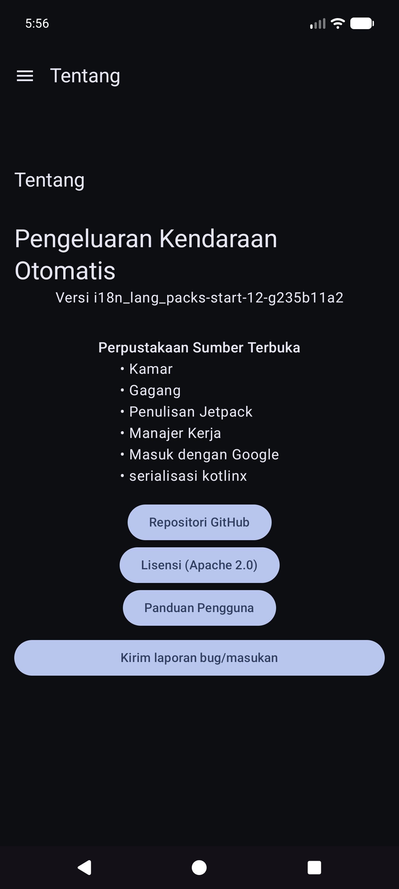